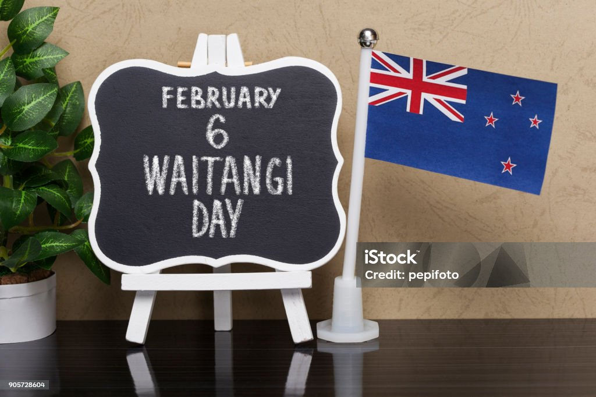
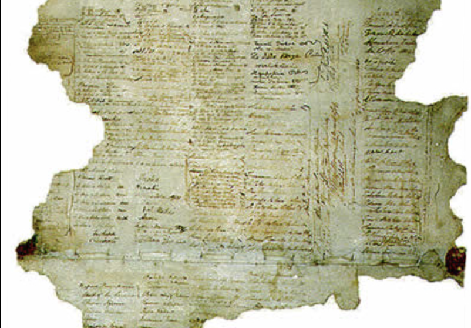
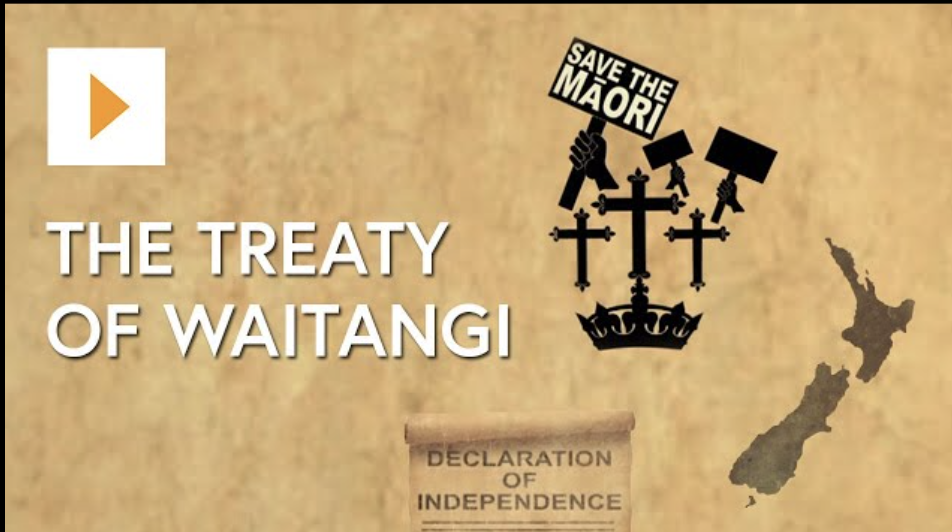

The treaty of Waitangi is an important part of NZ's history and culture, we even have day celebrating it. But why do we have this day? what does it represent and what does it mean? In fact what is the treaty of Waitangi itself?

The Treaty of Waitangi is New Zealand’s founding document. It takes its name from the place in the Bay of Islands where it was first signed, on 6 February 1840. This day is now a public holiday in New Zealand. The Treaty is an agreement, in Māori and English, that was made between the British Crown and about 540 Māori rangatira (chiefs).

Learn more about the treaty of Waitangi in the folowing pages revolving around it's bacground, it's creation, it's signing and more
